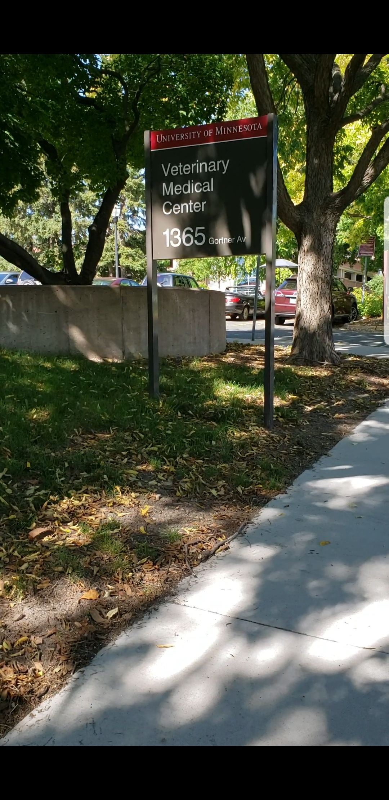

Veterinary Medical Center
The Veterinary Medical Center is located on the University of Minnesota, Saint Paul campus next to the state fair grounds. Convenient and free parking is located just outside the hospital. See the reception desk for your parking permit.
Small Animal Hospital
1365 Gortner Avenue
St. Paul, MN 55108
Call us at 612-626-8387 (VETS) for questions, more information, or to schedule an appointment. No referral needed.
Daytime hours:
Monday - Friday: 8:00 am - 4:30 pm
Emergency:
If your pet needs immediate attention, our Emergency department is open 24 hours/day, 7 days/week.
